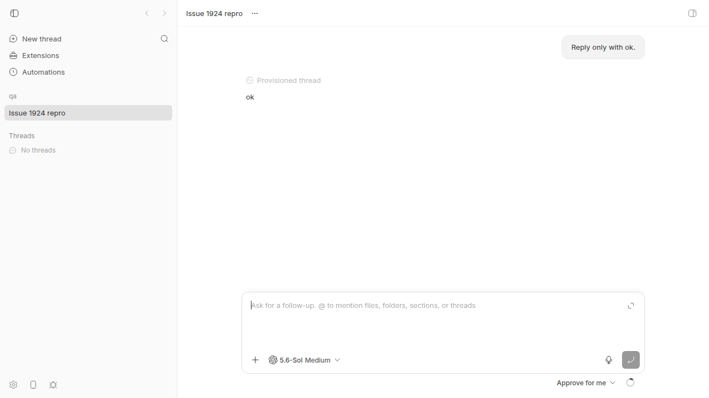
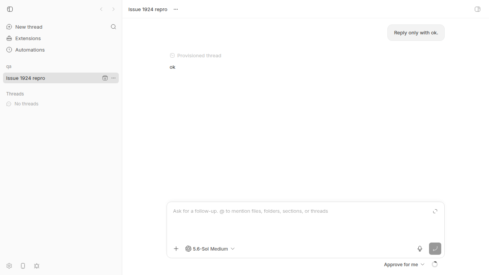
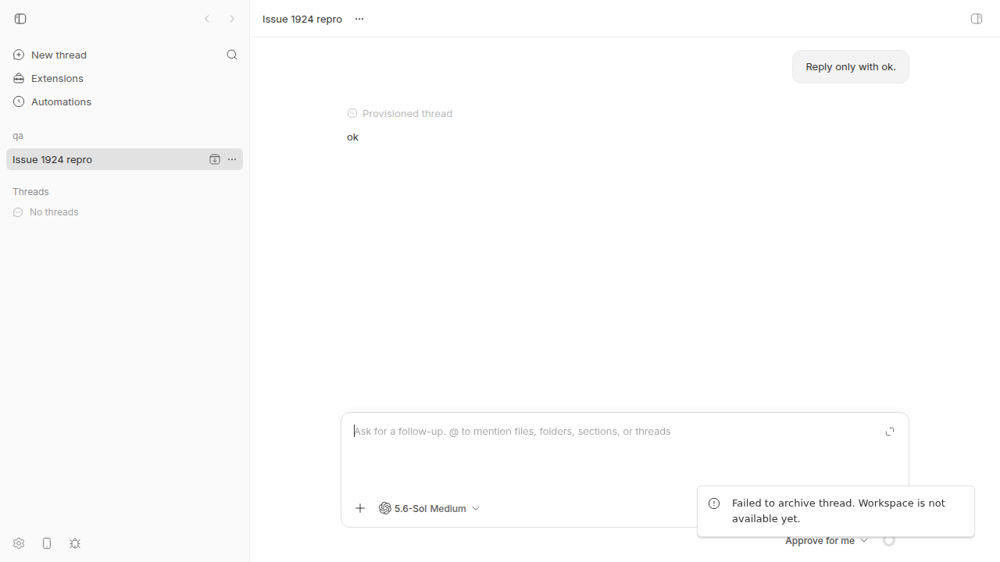
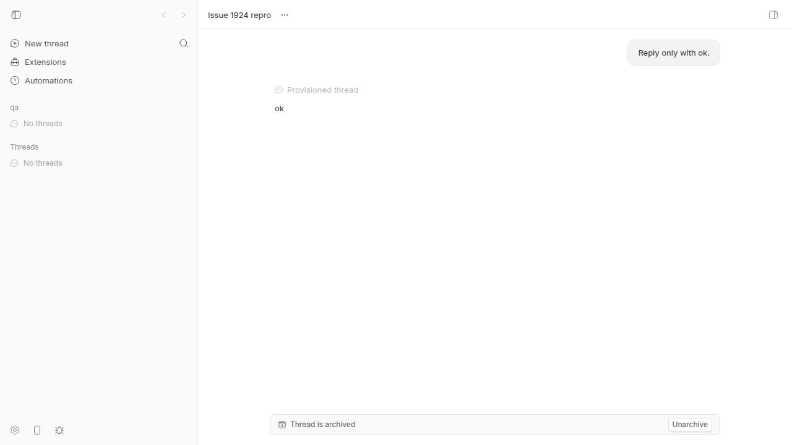

#1924 · Archiving a thread fails with 409 once its environment row has been pruned
Verdict: REPRODUCED · Root-cause confidence: high
1. TL;DR
A thread whose managed environment was destroyed and later garbage-collected can never be archived: POST /api/v1/threads/:id/archive and /archive-all return 409 thread_environment_unavailable (reason never_attached), the CLI prints HTTP 409: Thread environment is unavailable, and the app shows the misleading toast "Workspace is not available yet." The thread stays in the sidebar forever; the only way out is delete, which destroys the transcript.
Mechanism: pruneDestroyedEnvironments hard-deletes destroyed environment rows after 7 days without checking for live threads; threads.environment_id is ON DELETE SET NULL, so the still-unarchived thread silently loses its pointer. The archive path (routes.archive, archiveThreadAndHiddenSourceForks, archiveThreadAndChildren) calls requireThreadHostCommandEnvironment, which throws for a NULL pointer, even though the environment is only used to stop live runtime work (which a pointer-less idle thread has none of). Delete and stop already tolerate NULL; archive does not.
I reproduced it live on a dev instance with a fully organic path that needs no "mystery destroy": archive thread → wait out the 5-minute retire grace window (environment becomes destroyed) → unarchive the thread (allowed; read-only) → 7-day TTL elapses (simulated by rewinding environments.updated_at) → periodic sweep prunes the row → archive now 409s. A vitest repro fails on base and passes with a 3-file prototype fix; the same fix made the live thread archivable.
2. Claims vs findings
| Claim from the issue | Status | Evidence |
|---|---|---|
/archive returns 409 thread_environment_unavailable / never_attached for threads with NULL environment_id | Verified | Live: 03-curl-archive.txt, CLI 02-cli-archive-output.txt; unit: vitest-output-base.txt |
/archive-all fails the same way, so no UI/CLI workaround | Verified | 04-curl-archive-all.txt; the app's sidebar "Archive thread" button actually calls /archive-all and shows the error toast (screenshot below) |
| Delete works for the same thread (and destroys the transcript) | Verified | Test "DELETE /threads/:id (the only workaround) succeeds" passes on base; base.ts#L436-L441 handles environmentId === null |
pruneDestroyedEnvironments deletes destroyed envs older than 7 days with no live-thread guard | Verified | sweeps.ts#L365-L396 filters only on status+age; test "pruneDestroyedEnvironments deletes an environment that still has a live thread" passes (deleted === 1) on base |
threads.environment_id is ON DELETE SET NULL | Verified | schema.ts#L564-L566; foreign_keys = ON in connection.ts#L178; observed live: thread row went from env_9m596f8r6v to NULL after the sweep |
sweepManagedEnvironments does guard on live threads | Verified | sweeps.ts#L344-L363 (NOT EXISTS live threads) |
| Archive requires the environment only to stop active runtime work, so the requirement is not load-bearing | Verified | thread-archive.ts#L55-L61: the env is only passed to requestActiveRuntimeThreadStopIfNeeded, which is a no-op unless status is active or a live start is in flight |
The never_attached reason is misleading | Verified | Thread ran a real turn in env_9m596f8r6v; the app maps the reason to "Workspace is not available yet." (lifecycle-errors.ts#L211-L216) |
| Step 1-2 of the issue: "environment is later destroyed" while the thread is unarchived | Partially verified | The issue does not say how. I found one fully organic path: archive → 5-min grace elapses → env destroyed → unarchive (allowed, thread stays idle/read-only). Other paths may exist (project deletion, orphan cleanup), not enumerated. |
The two reporter threads thr_vyaz3wdwjv, thr_ijwvxv9hy6 | Unverified | Reporter's install; not accessible |
3. Environment
- bb
c7c66423d55c320bab9103218f0ffef1a8191331(main, 2026-08-20); no later commit onorigin/mainat investigation time - Linux 7.0.0-29-generic, node v24.18.0, codex-cli 0.148.0 (provider
codex, one tiny real turn) - Dev instance: App http://localhost:15833, Server http://localhost:23833, Host daemon 127.0.0.1:31833, data dir
~/.bb-dev/projects-bb-.claude-worktrees-wf_926b3193-f6c-1-b219d2e1621b(deleted after the run) - Scratch project repo
/tmp/bb-1924-qa, projectproj_c7kzwebk9y, hosthost_uwsnsqh85d, threadthr_kfdy8qhyfj, environmentenv_9m596f8r6v
4. Minimal reproduction
4a. Unit-level (fastest, deterministic)
- Save the test below as
apps/server/test/threads/issue-1924-archive-pruned-environment.test.ts(also at1924/repro/). - Run:
cd apps/server && pnpm exec vitest run test/threads/issue-1924-archive-pruned-environment.test.ts
- Expected: all 4 tests pass. Actual on
c7c66423d: 2 fail, both withexpected 409 to be 200:RUN v4.1.1 /home/USER/projects/bb/.claude/worktrees/wf_926b3193-f6c-1/apps/server stdout | test/threads/issue-1924-archive-pruned-environment.test.ts > issue #1924: archive after environment prune > POST /threads/:id/archive succeeds for a thread whose environment was pruned archive response: 409 {"code":"thread_environment_unavailable","message":"Thread environment is unavailable","details":{"reason":"never_attached","environmentStatus":null}} stdout | test/threads/issue-1924-archive-pruned-environment.test.ts > issue #1924: archive after environment prune > POST /threads/:id/archive-all succeeds for a thread whose environment was pruned archive-all response: 409 {"code":"thread_environment_unavailable","message":"Thread environment is unavailable","details":{"reason":"never_attached","environmentStatus":null}} ❯ @bb/server test/threads/issue-1924-archive-pruned-environment.test.ts (4 tests | 2 failed) 361ms × POST /threads/:id/archive succeeds for a thread whose environment was pruned 100ms × POST /threads/:id/archive-all succeeds for a thread whose environment was pruned 80ms ⎯⎯⎯⎯⎯⎯⎯ Failed Tests 2 ⎯⎯⎯⎯⎯⎯⎯ FAIL @bb/server test/threads/issue-1924-archive-pruned-environment.test.ts > issue #1924: archive after environment prune > POST /threads/:id/archive succeeds for a thread whose environment was pruned AssertionError: expected 409 to be 200 // Object.is equality - Expected + Received - 200 + 409 ❯ test/threads/issue-1924-archive-pruned-environment.test.ts:82:31 80| ); 81| } 82| expect(response.status).toBe(200); | ^ 83| expect(getThread(harness.deps.db, thread.id)?.archivedAt).not.to… 84| }); ❯ withTestHarness test/helpers/test-app.ts:289:12 ❯ test/threads/issue-1924-archive-pruned-environment.test.ts:64:5 ⎯⎯⎯⎯⎯⎯⎯⎯⎯⎯⎯⎯⎯⎯⎯⎯⎯⎯⎯⎯⎯⎯⎯⎯[1/2]⎯ FAIL @bb/server test/threads/issue-1924-archive-pruned-environment.test.ts > issue #1924: archive after environment prune > POST /threads/:id/archive-all succeeds for a thread whose environment was pruned AssertionError: expected 409 to be 200 // Object.is equality - Expected + Received - 200 + 409 ❯ test/threads/issue-1924-archive-pruned-environment.test.ts:103:31 101| ); 102| } 103| expect(response.status).toBe(200); | ^ 104| expect(getThread(harness.deps.db, thread.id)?.archivedAt).not.to… 105| }); ❯ withTestHarness test/helpers/test-app.ts:289:12 ❯ test/threads/issue-1924-archive-pruned-environment.test.ts:88:5 ⎯⎯⎯⎯⎯⎯⎯⎯⎯⎯⎯⎯⎯⎯⎯⎯⎯⎯⎯⎯⎯⎯⎯⎯[2/2]⎯ Test Files 1 failed (1) Tests 2 failed | 2 passed (4) Start at 14:12:26 Duration 2.92s (transform 1.44s, setup 0ms, import 2.48s, tests 361ms, environment 0ms)
Repro test source
// Repro for get-bb/bb#1924: archiving a thread fails with 409 once its
// environment row has been pruned by pruneDestroyedEnvironments.
import { environments, getThread, pruneDestroyedEnvironments } from "@bb/db";
import { apiErrorSchema } from "@bb/server-contract";
import { eq } from "drizzle-orm";
import { describe, expect, it } from "vitest";
import { readJson } from "../helpers/json.js";
import {
seedEnvironment,
seedHostSession,
seedProjectWithSource,
seedThread,
} from "../helpers/seed.js";
import { withTestHarness } from "../helpers/test-app.js";
const EIGHT_DAYS_MS = 8 * 24 * 60 * 60_000;
function seedThreadWithPrunedEnvironment(
deps: Parameters<typeof seedThread>[0],
) {
const { host } = seedHostSession(deps);
const { project } = seedProjectWithSource(deps, { hostId: host.id });
const environment = seedEnvironment(deps, {
hostId: host.id,
projectId: project.id,
managed: true,
workspaceProvisionType: "managed-worktree",
});
const thread = seedThread(deps, {
environmentId: environment.id,
projectId: project.id,
status: "idle",
});
// Issue step 2: the environment is destroyed while the thread stays
// unarchived. Step 3: the 7-day TTL elapses (updated_at set back 8 days).
deps.db
.update(environments)
.set({ status: "destroyed", updatedAt: Date.now() - EIGHT_DAYS_MS })
.where(eq(environments.id, environment.id))
.run();
const pruned = pruneDestroyedEnvironments(deps.db, deps.hub);
expect(pruned.deleted).toBe(1);
// threads.environment_id is ON DELETE SET NULL: the pointer is stripped from
// the still-live thread.
const threadAfterPrune = getThread(deps.db, thread.id);
expect(threadAfterPrune?.environmentId).toBeNull();
expect(threadAfterPrune?.archivedAt).toBeNull();
return { host, project, thread, environmentId: environment.id };
}
describe("issue #1924: archive after environment prune", () => {
it("pruneDestroyedEnvironments deletes an environment that still has a live thread", async () => {
await withTestHarness(async (harness) => {
// The helper asserts deleted === 1 and environmentId === null.
seedThreadWithPrunedEnvironment(harness.deps);
});
});
it("POST /threads/:id/archive succeeds for a thread whose environment was pruned", async () => {
await withTestHarness(async (harness) => {
const { thread } = seedThreadWithPrunedEnvironment(harness.deps);
const response = await harness.app.request(
`/api/v1/threads/${thread.id}/archive`,
{ method: "POST" },
);
const body = await readJson(response);
// BUG on c7c66423d: status is 409 with
// {"code":"thread_environment_unavailable","details":{"reason":"never_attached"}}
if (response.status !== 200) {
const error = apiErrorSchema.parse(body);
console.log(
"archive response:",
response.status,
JSON.stringify(error),
);
}
expect(response.status).toBe(200);
expect(getThread(harness.deps.db, thread.id)?.archivedAt).not.toBeNull();
});
});
it("POST /threads/:id/archive-all succeeds for a thread whose environment was pruned", async () => {
await withTestHarness(async (harness) => {
const { thread } = seedThreadWithPrunedEnvironment(harness.deps);
const response = await harness.app.request(
`/api/v1/threads/${thread.id}/archive-all`,
{ method: "POST" },
);
const body = await readJson(response);
if (response.status !== 200) {
console.log(
"archive-all response:",
response.status,
JSON.stringify(body),
);
}
expect(response.status).toBe(200);
expect(getThread(harness.deps.db, thread.id)?.archivedAt).not.toBeNull();
});
});
it("DELETE /threads/:id (the only workaround) succeeds for the same thread", async () => {
await withTestHarness(async (harness) => {
const { thread } = seedThreadWithPrunedEnvironment(harness.deps);
const response = await harness.app.request(
`/api/v1/threads/${thread.id}`,
{
method: "DELETE",
headers: { "content-type": "application/json" },
body: JSON.stringify({ childThreadsConfirmed: false }),
},
);
expect(response.status).toBe(200);
});
});
});
4b. Live, end to end (dev instance + CLI + app)
- Start a dev instance and create a project from a scratch git repo (
scripts/bb-dev-app current;POST /api/v1/projects). - Spawn a thread in a new managed worktree and let it go idle:
bb thread spawn --project proj_c7kzwebk9y --new-environment worktree --provider codex --prompt "Reply only with ok." --title "Issue 1924 repro" bb thread wait thr_kfdy8qhyfj --status idle # environmentId = env_9m596f8r6v
- Archive it once, wait out the 5-minute retire grace window (
wait-destroyed.sh), then unarchive it. The environment is nowdestroyedand the thread is unarchived and idle (a normal "oops, unarchive" flow):bb thread archive thr_kfdy8qhyfj # Thread thr_kfdy8qhyfj archived # ... 14:19:44 retiring / 14:19:54 destroyed bb thread unarchive thr_kfdy8qhyfj # Thread thr_kfdy8qhyfj unarchived curl -s $BB_SERVER_URL/api/v1/environments/env_9m596f8r6v # ..."status":"destroyed"...
Control: at this pointbb thread archive/unarchivestill work, because the environment row exists. - Simulate the 7-day TTL and let the 10-second periodic sweep run:
sqlite3 <data-dir>/bb.db "UPDATE environments SET updated_at = updated_at - 8*24*60*60*1000 WHERE id='env_9m596f8r6v';" sleep 15 sqlite3 <data-dir>/bb.db "SELECT count(*) FROM environments WHERE id='env_9m596f8r6v'; SELECT id, environment_id, archived_at, status FROM threads WHERE id='thr_kfdy8qhyfj';" # 0 # thr_kfdy8qhyfj|||idle <-- environment_id is now NULL
- Try to archive:
$ bb thread archive thr_kfdy8qhyfj Error: Failed to archive thread thr_kfdy8qhyfj: HTTP 409: Thread environment is unavailable $ curl -s -i -X POST $BB_SERVER_URL/api/v1/threads/thr_kfdy8qhyfj/archive HTTP/1.1 409 Conflict {"code":"thread_environment_unavailable","message":"Thread environment is unavailable","details":{"reason":"never_attached","environmentStatus":null}} $ curl -s -X POST $BB_SERVER_URL/api/v1/threads/thr_kfdy8qhyfj/archive-all {"code":"thread_environment_unavailable","message":"Thread environment is unavailable","details":{"reason":"never_attached","environmentStatus":null}}Expected:200 {"ok":true}andarchivedAtset.

environment_id NULL) looks like a perfectly normal idle thread; composer enabled, one completed turn.

409 (Conflict) .../threads/thr_kfdy8qhyfj/archive-all. The thread stays in the sidebar.
Repro files: 1924/repro/ (test, CLI/curl outputs, vitest logs, prototype diff, wait script).
5. Root cause
Two cooperating defects:
- The sweep manufactures the state. pruneDestroyedEnvironments selects
status = 'destroyed' AND updated_at < now - 7dand hard-deletes those rows. Unlike its sibling sweepManagedEnvironments it has noNOT EXISTS (live threads)guard. Because threads.environment_id isON DELETE SET NULL(andPRAGMA foreign_keys = ON), an unarchived thread pointing at that row silently becomesenvironment_id = NULL. It runs from periodic-sweeps.ts every 10 s. - Archive cannot handle the state. routes.archive, archiveThreadAndHiddenSourceForks (per hidden fork) and archiveThreadAndChildren (per thread, used by
/archive-all) all call requireThreadHostCommandEnvironment, which throwsthread_environment_unavailable / never_attachedwheneverenvironmentId === null. The only consumer of the result inside archive is requestActiveRuntimeThreadStopIfNeeded, which early-returns unless the thread isactiveor has a live start in flight — neither is possible for a thread whose environment no longer exists. The delete route (base.ts#L436) and the stop route (actions.ts#L463) already branch onenvironmentId === null; archive is the odd one out.
The never_attached reason and the app's "Workspace is not available yet." copy (lifecycle-errors.ts) are both wrong for this state: the server cannot distinguish "never had an environment" from "had one, row pruned" because the pointer is gone. Not a regression: git log -S shows archive has required an environment since c35a71024 (2026-05-27) and the prune sweep has existed since ebc001ab1 (2026-06-06).
How the state arises organically (the issue leaves this implicit): archive → environment retiring → after MANAGED_ENVIRONMENT_RETIRE_GRACE_MS (5 min, constants.ts#L15) it is destroyed → user unarchives (permitted; see comment at actions.ts#L688, thread becomes read-only) → 7 days later the row is pruned. Any other route to a destroyed environment with a live thread (project/worktree removal, orphan cleanup) lands in the same place.
Secondary observation: in archiveThreadAndHiddenSourceForks the throw happens inside the fork loop after the source thread was already archived, so a pruned hidden fork leaves the parent archived and the fork not — a partial, non-atomic archive with a 409 back to the client.
6. Proposed fix (first principles)
Confident. Prototype (prototype-fix.diff, 3 files, server only, no wire change so no HOST_DAEMON_PROTOCOL_VERSION bump) — makes the repro test pass, pnpm exec turbo run typecheck --filter=@bb/server clean, 12 archive-related test files (21 tests) still green, and the live thread became archivable after pnpm dev:restart-server (05-curl-archive-with-fix.txt):
thread-command-environment.ts: addresolveThreadHostCommandEnvironmentreturningnullfor a NULL pointer (stillrequireEnvironmentfor a dangling non-NULL id).thread-archive.ts: makeArchiveThreadWithLifecycleEffectsArgs.environmentnullable and skiprequestActiveRuntimeThreadStopIfNeededwhen null; use the resolver for hidden forks and inarchiveThreadAndChildren(only add non-null envs toaffectedEnvironmentIds). Every other archive effect (terminal close, provider archive command, event pruning, plugin event, child release) runs unchanged.routes/threads/actions.ts:routes.archiveuses the resolver.wouldCleanupEnvironmentalready takes a nullable id.
Prototype diff
diff --git a/apps/server/src/routes/threads/actions.ts b/apps/server/src/routes/threads/actions.ts
index a59673fa2..b27eaee91 100644
--- a/apps/server/src/routes/threads/actions.ts
+++ b/apps/server/src/routes/threads/actions.ts
@@ -75,6 +75,7 @@ import {
import {
requireThreadCommandEnvironment,
requireThreadHostCommandEnvironment,
+ resolveThreadHostCommandEnvironment,
} from "../../services/threads/thread-command-environment.js";
import {
LIVE_DAEMON_COMMAND_TIMEOUT_MS,
@@ -652,7 +653,7 @@ export function registerThreadActionRoutes(app: Hono, deps: AppDeps): void {
environmentId: thread.environmentId,
excludeThreadId: thread.id,
});
- const environment = requireThreadHostCommandEnvironment({
+ const environment = resolveThreadHostCommandEnvironment({
db: deps.db,
thread,
});
diff --git a/apps/server/src/services/threads/thread-archive.ts b/apps/server/src/services/threads/thread-archive.ts
index 66b1e2dc2..aea6d67df 100644
--- a/apps/server/src/services/threads/thread-archive.ts
+++ b/apps/server/src/services/threads/thread-archive.ts
@@ -20,13 +20,13 @@ import {
requestActiveRuntimeThreadStopIfNeeded,
} from "./thread-lifecycle.js";
import { archiveThreadAndReleaseChildren } from "./thread-ownership.js";
-import { requireThreadHostCommandEnvironment } from "./thread-command-environment.js";
+import { resolveThreadHostCommandEnvironment } from "./thread-command-environment.js";
interface ArchiveThreadWithLifecycleEffectsArgs {
environment: {
hostId: string;
id: string;
- };
+ } | null;
thread: Pick<Thread, "environmentId" | "id" | "status">;
}
@@ -53,12 +53,15 @@ export function archiveThreadWithLifecycleEffects(
threadId: archivedThread.id,
});
// Archive only stops active runtime work; manual stop is the pre-start
- // provisioning cancellation entrypoint.
- requestActiveRuntimeThreadStopIfNeeded(
- deps,
- archivedThread,
- args.environment,
- );
+ // provisioning cancellation entrypoint. A thread whose environment row was
+ // pruned has no runtime left to stop.
+ if (args.environment !== null) {
+ requestActiveRuntimeThreadStopIfNeeded(
+ deps,
+ archivedThread,
+ args.environment,
+ );
+ }
dispatchSettledArchivedThreadProviderArchiveCommand(deps, {
threadId: archivedThread.id,
});
@@ -90,7 +93,7 @@ export function archiveThreadAndHiddenSourceForks(
sourceThreadId: archivedThread.id,
})) {
archiveThreadWithLifecycleEffects(deps, {
- environment: requireThreadHostCommandEnvironment({
+ environment: resolveThreadHostCommandEnvironment({
db: deps.db,
thread: fork,
}),
@@ -160,7 +163,7 @@ export function archiveThreadAndChildren(
const affectedEnvironmentIds = new Set<string>();
for (const thread of threads) {
- const environment = requireThreadHostCommandEnvironment({
+ const environment = resolveThreadHostCommandEnvironment({
db: deps.db,
thread,
});
@@ -172,7 +175,9 @@ export function archiveThreadAndChildren(
continue;
}
archivedThreadIds.push(result.id);
- affectedEnvironmentIds.add(environment.id);
+ if (environment !== null) {
+ affectedEnvironmentIds.add(environment.id);
+ }
}
for (const environmentId of affectedEnvironmentIds) {
diff --git a/apps/server/src/services/threads/thread-command-environment.ts b/apps/server/src/services/threads/thread-command-environment.ts
index e46e276b2..175aefed5 100644
--- a/apps/server/src/services/threads/thread-command-environment.ts
+++ b/apps/server/src/services/threads/thread-command-environment.ts
@@ -24,6 +24,25 @@ interface ThreadHostCommandEnvironment {
id: string;
}
+/**
+ * Resolve the host command environment for a thread, or null when the thread
+ * has no environment pointer. A thread loses its pointer when its environment
+ * row is pruned (threads.environment_id is ON DELETE SET NULL), so callers
+ * that only need the environment to stop live runtime work must tolerate null.
+ */
+export function resolveThreadHostCommandEnvironment(
+ args: RequireThreadHostCommandEnvironmentArgs,
+): ThreadHostCommandEnvironment | null {
+ if (args.thread.environmentId === null) {
+ return null;
+ }
+ const environment = requireEnvironment(args.db, args.thread.environmentId);
+ return {
+ id: environment.id,
+ hostId: environment.hostId,
+ };
+}
+
export function requireThreadHostCommandEnvironment(
args: RequireThreadHostCommandEnvironmentArgs,
): ThreadHostCommandEnvironment {
Also recommended, to stop re-manufacturing the state: add the same NOT EXISTS (SELECT 1 FROM threads WHERE environment_id = environments.id AND archived_at IS NULL AND deleted_at IS NULL) guard to pruneDestroyedEnvironments. Trade-off: destroyed rows for live threads are then retained indefinitely (tiny rows; they are pruned once the thread is archived/deleted). Note that the guard alone does not repair already-stripped threads, and it would never fire for threads that genuinely never attached, so the archive-side change is the necessary one. Consider also making the app copy for never_attached not say "yet" when the thread is idle.
Risk: a thread that is active with environmentId === null would now be archived without a runtime stop request; I could not construct that state (a thread gets its environment before its first turn starts), and delete already behaves this way.
7. PR review
No open PRs are linked to this issue.
8. Related issues
- Same
never_attached-for-pruned-environment confusion will affect every other route that usesrequireThreadHostCommandEnvironment/requireThreadCommandEnvironmenton such a thread (terminals, host-files, plan cancel, turn submit), but those genuinely need an environment; archive is the one that does not.
9. Appendix
Commands run (abridged)
pnpm install --frozen-lockfile --prefer-offline
pnpm exec turbo run build
cd apps/server && pnpm exec vitest run test/threads/issue-1924-archive-pruned-environment.test.ts # 2 failed on base
scripts/bb-dev-app current # App :15833 Server :23833 Host daemon :31833
curl -s -X POST http://localhost:23833/api/v1/projects -H 'content-type: application/json' -d '{"name":"qa","source":{"type":"local_path","path":"/tmp/bb-1924-qa","hostId":"host_uwsnsqh85d"}}'
node packages/scripts/dist/commands/run-cli.js thread spawn --project proj_c7kzwebk9y --new-environment worktree --provider codex --prompt "Reply only with ok." --title "Issue 1924 repro" --json
node packages/scripts/dist/commands/run-cli.js thread wait thr_kfdy8qhyfj --status idle
node packages/scripts/dist/commands/run-cli.js thread archive thr_kfdy8qhyfj
bash 1924/repro/wait-destroyed.sh http://localhost:23833 env_9m596f8r6v # destroyed at 14:19:54
node packages/scripts/dist/commands/run-cli.js thread unarchive thr_kfdy8qhyfj
sqlite3 bb.db "UPDATE environments SET updated_at = updated_at - 8*24*60*60*1000 WHERE id='env_9m596f8r6v';"
node packages/scripts/dist/commands/run-cli.js thread archive thr_kfdy8qhyfj # HTTP 409
curl -s -i -X POST http://localhost:23833/api/v1/threads/thr_kfdy8qhyfj/archive # 409
curl -s -X POST http://localhost:23833/api/v1/threads/thr_kfdy8qhyfj/archive-all # 409
# apply prototype-fix.diff; pnpm dev:restart-server; curl ... /archive -> 200 {"ok":true}
pnpm exec turbo run typecheck --filter=@bb/server
cd apps/server && pnpm exec vitest run -t "archive" # 12 files / 21 tests passed with fix
Artifacts
01-thread-spawn.json— spawn response (noteenvironmentId: nullwhilestarting)02-cli-archive-output.txt,03-curl-archive.txt,04-curl-archive-all.txt— the failure05-curl-archive-with-fix.txt— success after prototype fixvitest-output-base.txt,vitest-output-with-fix.txtprototype-fix.diff,wait-destroyed.sh,build-report.py